|
|
|
Новогодние каникулы на Мамае
(5-8 января 2007) День 1-й, 5 января, кто-то накануне откатал трассовый фрирайд по свежевыпавшему снегу в Байкальске, а Лешкин и Юля СНежная поехали на Мамай искать внетрассовый фрирайд и спасать засыпаных снегом друзей, которые без пельменей и спиртного не могут выйти обратно :). Упрямые внедорожники все еще пробивают дорогу, но до шлагбаума уже не доезжают. Тропа вполне приличная, радует утренний зимний мороз и белые-белые деревья, подсвеченные солнцем. Нет, это надо видеть и чувствовать, фотографиями и словами такие вещи трудно передать. 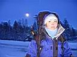 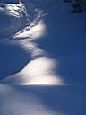 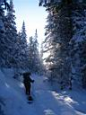 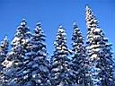 В зимовье с 3-го числа живет большая компания, 9 человек, ребятам достались снегопадные дни, за которые они построили 4 трамплина, прыгали, крутили всякие бочки, 360 и тому подобные вещи, заснятые на видео. Джиберская часть тусовки (Вова Sat, Тоня, Вася, Паша) сегодня решила выходить с Мамая, наверное ребят угнетало отсутствие рейлов :) , с ними выходили Сява, Кристина и Ольга. Остались любители тропинга и целины - Вова Язык и Лёха Пестов. "Куда пойдем кататься?" - "На гору!". Самый веселый склон зимой - солнечный склон, потому как на солнце завсегда веселее и теплее. Половина тропы до Лесного Пупыря была пробита лыжниками-туристами старшего поколения, за что им спасибо. А дальше мы, плюс Артем Сушко, плюс компания из чума (Дима Яскин, Лена, Сергей, Антон) совместными усилиями ложим нитку тропы на вершину Лесного. Причем Антон на хитрых волосато-деревянных лыжах паралельно лыжню в гору тропит :) 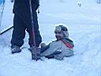 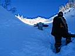 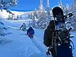 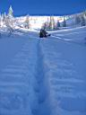 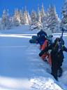 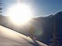 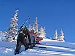 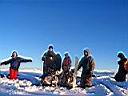 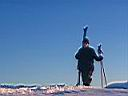 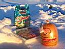 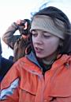 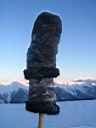 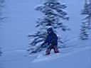 На вершине перекусили, чай попили, на заходящее солнце посмотрели и вниз покатили. Лёха первый поехал, занял внизу позицию и отснял всех спускающихся на видео. Потому как просто так кататься уже ... ну, не надоело нам, блаженство надоесть не может, а просто пообвыклись слегка ... :) Ну и хватит на сегодня - сделали тропу, катанули, темнеет уже, пора и по домам, в смысле - кому в зимовье, а кому в чум. А к нам на огонек в зимуху заглянули читинцы, они сегодня в ночь выезжают. Это отдельная история, подробности мы еще надеемся получить в скором времени, а в кратце дело было так. Шесть парней из Читы, из клуба экстремалов "Другой Мир" узнали, что есть на Байкале такое место, где все катают фрирайд и снега много. Но что его НАСТОЛЬКО много они поняли, только когда заходили в ночь 6 часов и потом несколько дней прыгали с трамплина, и еще с кунга башкой вниз :) в общем, мы ждем от парней подробностей, фоток и имен-фамилий героев маршрута Чита-Мамай. Посидев в зимухе, решили продолжить междугороднее общение.
Прихватив гитару и поллитра нужной жидкости, заглянули в улан-удэнское
зимовье "Берлога", где компактно проживали Дядя Паша Тугаринов
и Саша Малюк с сыном Вадиком. Хозяева принимали редких гостей на славу
- на примусе варился реальный мясной бульон с реальным мясом, порезан
хозяйский шмат сала, разведеный спирт смешан с бальзамом "Бурятия".
Гремучая смесь подогревалась на примусе в видавшей виды алюмонивой кружке,
потом переливалась в термокружку и пускалась по кругу. При поднесении
к фэйсу горячего сорокоградусного горячительного напитка рекомендуется
закрывать глаза и не дышать, после отхлебывания закусить лимоном с солью!
Да, те кто придумал такую штуку и пьет ее - ребята крепкие :) ! 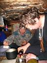 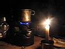 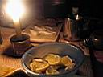 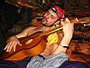 Время за полночь, луна светит как безумная, будто в последний раз. Свежий воздух выдувает пары спирта из организма, крепче будем спать, завтра нас ждут интересные дела ... ... окончание смотрите и читайте вот здесь ...
Январь 2007. Белокрылов А.Ю. Слюдянка. |
Белые склоны Лесного Пупыря, белые-белые елки, синее-синее
небо, самолеты-стрелы.
|